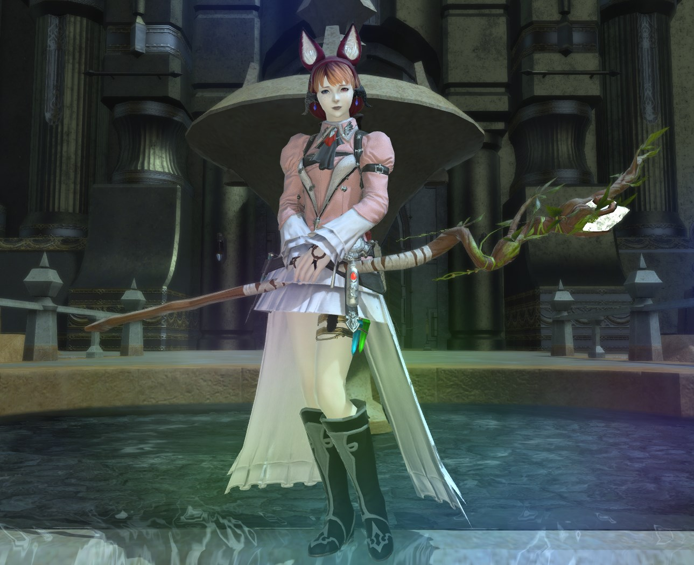

Khiti and Serah Matoya
- Khiti and Serah Matoya born Keeper of the Moon twins in one of the small parts of Meracydia that is still habitable
- Khiti has species dysphoria, finds a shady source of Fantasia, and begins working her way backwards through her Zelda-esque trading quest to get it
- Khiti starts building a boat in secret to bail on Meracydia after she gets her fantasia.
- Serah has already figured out what Khiti is doing and is on board with it but not gonna broach the subject with Khiti.
- After a few years, Khiti has gotten good enough at woodworking to make a boat and has gotten her fantasia.
- Khiti waits til sundown with noone around, pushes off with no idea how to sail, and downs the fantasia assuming itll just turn her into whatever her ideal form is (not that she has any idea)
- Khiti goes unconscious as the fantasia starts to work, and the boat drifts out to sea.
- Khiti wakes the next morning as a xaela au ra, assumes shes a dragonkin since shes never seen an au ra before, and then notices Serah (who has snuck on and stowed away) calmly watching her
- Khiti and Serah have an argument over whether Serah should have stowed away for a while and then realise neither of them knows how to use a boat
- Several weeks later, the reconciled twins shipwreck and end up in Limsa and Vesper Bay respectively.
- Khiti picks up arcanum when the arcanist guild is the first place she passes, and stars the FFXIV:ARR MSQ.
- Serah wanders north frorm Vesper Bay and ends up in Gridania, where she picks up conjury and starts doing the MSQ on her end.
- The two are reunited at the Waking Sands after a bunch of near-misses and go through the MSQ from that point on together.
- Post-heavensward, Serah goes into semi-retirement and comes back in 4.3-4.4 as scions start to get taken
- Serah gets taken with Alisaie after Ghimlyt and Khiti gets real antsy during the wait from 4.55 to 5.0
- Khiti reunites with now-older Serah at the crystalline mean in 5.0, Khiti spending the overwhelming majority of her free time in the First to stay with Serah